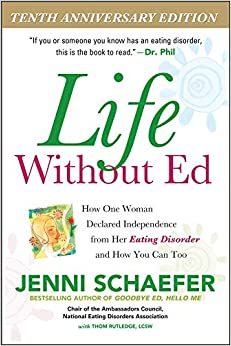

Eating disorder - Overview
There is a commonly held misconception that eating disorders are a lifestyle choice. Eating disorders are actually serious and often fatal illnesses that are associated with severe disturbances in people’s eating behaviors and related thoughts and emotions. Preoccupation with food, body weight, and shape may also signal an eating disorder. Common eating disorders include anorexia nervosa, bulimia nervosa, and binge-eating disorder.
Eating disorder - symptoms
Anorexia nervosa Anorexia nervosa is a condition where people avoid food, severely restrict food, or eat very small quantities of only certain foods. They also may weigh themselves repeatedly. Even when dangerously underweight, they may see themselves as overweight. There are two subtypes of anorexia nervosa: a "restrictive" subtype and a "binge-purge" subtype. In the restrictive subtype of anorexia nervosa, people severely limit the amount and type of food they consume. In the binge-purge subtype of anorexia nervosa, people also greatly restrict the amount and type of food they consume. In addition, they may have binge-eating and purging episodes—eating large amounts of food in a short time followed by vomiting or using laxatives or diuretics to get rid of what was consumed. Anorexia nervosa can be fatal. It has an extremely high death (mortality) rate compared with other mental disorders. People with anorexia are at risk of dying from medical complications associated with starvation. Suicide is the second leading cause of death for people diagnosed with anorexia nervosa. If you or someone you know is struggling or having thoughts of suicide, call or text the 988 Suicide & Crisis Lifeline at 988 or chat at 988lifeline.org. In life-threatening situations, call 911. Symptoms include: -> Extremely restricted eating -> -> Extreme thinness (emaciation) -> A relentless pursuit of thinness and unwillingness to maintain a normal or healthy weight -> Intense fear of gaining weight -> Distorted body image, a self-esteem that is heavily influenced by perceptions of body weight and shape, or a denial of the seriousness of low body weight Other symptoms may develop over time, including: -> Thinning of the bones (osteopenia or osteoporosis) -> Mild anemia and muscle wasting and weakness -> Brittle hair and nails -> Dry and yellowish skin -> Growth of fine hair all over the body (lanugo) -> Severe constipation -> Low blood pressure -> Slowed breathing and pulse -> Damage to the structure and function of the heart -> Brain damage -> Multiorgan failure -> Drop in internal body temperature, causing a person to feel cold all the time -> Lethargy, sluggishness, or feeling tired all the time -> Infertility Bulimia nervosa Bulimia nervosa is a condition where people have recurrent and frequent episodes of eating unusually large amounts of food and feeling a lack of control over these episodes. This binge-eating is followed by behavior that compensates for the overeating such as forced vomiting, excessive use of laxatives or diuretics, fasting, excessive exercise, or a combination of these behaviors. People with bulimia nervosa may be slightly underweight, normal weight, or over overweight. Symptoms include: -> Chronically inflamed and sore throat -> Swollen salivary glands in the neck and jaw area -> Worn tooth enamel and increasingly sensitive and decaying teeth as a result of exposure to stomach acid -> Acid reflux disorder and other gastrointestinal problems -> Intestinal distress and irritation from laxative abuse -> Severe dehydration from purging of fluids -> Electrolyte imbalance (too low or too high levels of sodium, calcium, potassium, and other minerals) which can lead to stroke or heart attack Binge-eating disorder Binge-eating disorder is a condition where people lose control over their eating and have reoccurring episodes of eating unusually large amounts of food. Unlike bulimia nervosa, periods of binge-eating are not followed by purging, excessive exercise, or fasting. As a result, people with binge-eating disorder often are overweight or obese. Binge-eating disorder is the most common eating disorder in the U.S. Symptoms include: -> Eating unusually large amounts of food in a specific amount of time, such as a 2-hour period -> Eating even when you're full or not hungry -> Eating fast during binge episodes -> Eating until you're uncomfortably full -> Eating alone or in secret to avoid embarrassment -> Feeling distressed, ashamed, or guilty about your eating -> Frequently dieting, possibly without weight loss Avoidant restrictive food intake disorder Avoidant restrictive food intake disorder (ARFID), previously known as selective eating disorder, is a condition where people limit the amount or type of food eaten. Unlike anorexia nervosa, people with ARFID do not have a distorted body image or extreme fear of gaining weight. ARFID is most common in middle childhood and usually has an earlier onset than other eating disorders. Many children go through phases of picky eating, but a child with ARFID does not eat enough calories to grow and develop properly, and an adult with ARFID does not eat enough calories to maintain basic body function. Symptoms include: -> Dramatic restriction of types or amount of food eaten -> Lack of appetite or interest in food -> Dramatic weight loss -> Upset stomach, abdominal pain, or other gastrointestinal issues with no other known cause -> Limited range of preferred foods that becomes even more limited (“picky eating” that gets progressively worse)
Eating disorder - Treatment
It is important to seek treatment early for eating disorders. People with eating disorders are at higher risk for suicide and medical complications. People with eating disorders can often have other mental disorders (such as depression or anxiety) or problems with substance use. Complete recovery is possible. Treatment plans are tailored to individual needs and may include one or more of the following: -> Individual, group, and/or family psychotherapy -> Medical care and monitoring -> Nutritional counselling -> Medications -> Psychotherapies -> Family-based therapy, a type of psychotherapy where parents of adolescents with anorexia nervosa assume responsibility for feeding their child, appears to be very effective in helping people gain weight and improve eating habits and moods. To reduce or eliminate binge-eating and purging behaviors, people may undergo cognitive behavioural therapy (CBT), which is another type of psychotherapy that helps a person learn how to identify distorted or unhelpful thinking patterns and recognize and change inaccurate beliefs. Medications Evidence also suggests that medications such as antidepressants, antipsychotics, or mood stabilisers may also be helpful for treating eating disorders and other co-occurring illnesses such as anxiety or depression. The Food and Drug Administration’s (FDA) website has the latest information on medication approvals, warnings, and patient information guides.
Recommended musics!
These are some recommended music
coniferous forest by orangery

autumn sky meditation by NaturesEye
Recommended videos
These are some videos which might help you feel better!
Recommended book
Unwinding Eating disorder: New Science Shows How to Break the Cycles of Worry and Fear to Heal Your Mind
